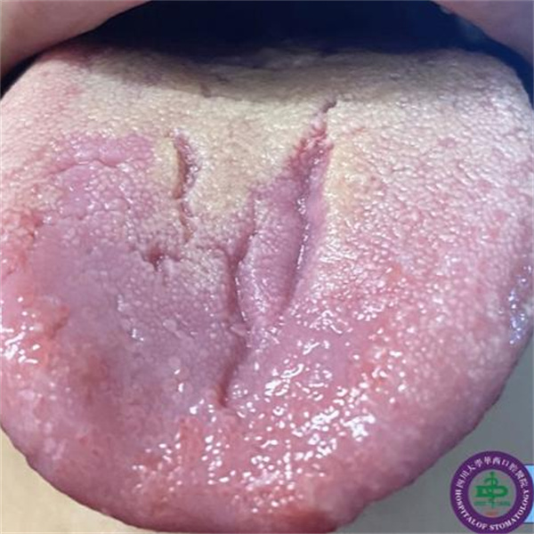

学院通知 · 教学通知
舌头的4种“异常”藏着身体健康的信号
发布时间：2026/05/07
最近有不少朋友问熊猫er牙医，“我的舌头有怎么会有裂纹、齿痕？该不会是‘舌癌’吧？”其实这些舌质变化都是身体向你发出了身体健康的“危险信号”，提醒你该注意身体健康啦。 舌头的4种“异常”情况 1.裂纹舌：舌面的“小沟壑” 症状：舌面上出现深浅、长短不一的裂纹或裂沟。 原因：如果是先天自带的，一般会有舌苔覆盖；如果是后天出现，或者有裂纹加深的症状，中医认为多与热盛、阴虚、血虚相关。 对策：先天性的无需特殊处理，平时做好口腔卫生，防止食物残渣积在裂纹中就行。如果是后天性的，且伴有随全身不适，须及时到医院就诊；平时可以适当吃百合、银耳等滋润的食物，避免熬夜。 2.地图舌：舌头上的“移动沙盘” 症状：舌背有不规则、边缘凸起、界限清晰的地图状区域，位置不固定，也叫“游走性舌炎”。 原因：中医认为这多与脾胃功能不佳有关，也是全身虚弱的一种表现，常和裂纹舌同时出现。 对策：如无全身不适仅观察即可，注意保持规律饮食。如果频繁发作或伴随全身症状（尤其是脾胃功能异常），建议及时就医检查。 3.齿痕舌：舌头边的“波浪纹” 症状：舌头边缘有明显的牙齿压迫痕迹，呈现出波浪状。 原因：中医认为多因脾胃虚弱、水湿内盛，脾胃运化失常导致舌体胖大，被牙齿挤压形成。 对策：少吃甜食和生冷、油腻的食物，减少脾胃负担；日常多吃山药、小米等健脾祛湿的食材。 4.镜面舌：舌面“光滑如镜” 症状：舌苔完全剥脱，舌面光滑红亮，像一面镜子。 原因：中医认为多为阴虚较重的标志，多因久病、重病、营养不良等导致津液严重耗损。 对策：遇到这种情况，不要自行调理，赶紧到医院就诊，接受系统检查和治疗。 健康与否，一看便知 1.健康的舌头长这样 晨起刷牙前在自然光下观察，健康舌象为舌体大小适中、柔软灵活，舌质淡红有光泽，舌苔薄白且均匀，舌边无齿痕、舌面无裂纹和异常剥脱区。 2.日常养护小技巧 ①做好舌面清洁，刷牙时轻刷舌面，饭后及时漱口，减少食物残渣残留。 ②保证睡眠，避免熬夜，以免过度耗伤津液。 ③减少过烫、辛辣、刺激性食物摄入，保护舌体黏膜。 发现舌质异常不用过度焦虑，读懂身体的“悄悄话”，做好日常的养护，就是最好的健康守护。
